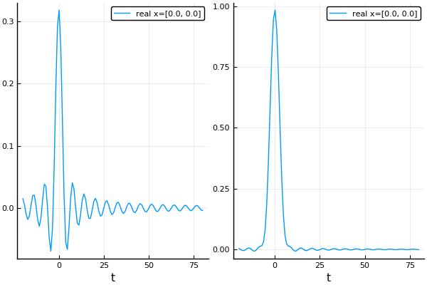

Time response
This package calculates all scattering in the frequency domain, and we call the resulting field the frequency response $\hat u(\mathbf x,\omega)$, which satisfies $\nabla^2 \hat u(\mathbf x,\omega) + k^2 \hat u(\mathbf x,\omega) = 0$, where $k = \omega/c$. We can transform the frequency response $\hat u(\mathbf x,\omega)$ into a time response $u(\mathbf x,t)$ using a Fourier transform, where $u(\mathbf x,t)$ satisfies $\nabla^2 u(\mathbf x,t) - \frac{1}{c^2} \frac{\partial^2}{\partial t^2}u(\mathbf x,t) = 0$. For a minimal example see Results in time, or see Technical details for more maths.
The package assumes the time response $u(\mathbf x,t)$ is always real, this simplifies the Fourier transform.
Intro
As an example, let use a plane-wave source $\mathrm e^{\mathrm i \omega x}$ and measure the response at origin of the source $x = (0,0)$,
plane_wave = plane_source(Acoustic(1.0, 1.0, 2); direction = [1.0,0.0], position = [0.0,0.0]);
x = [[0.0,0.0]];
ωs = LinRange(0.0,1.0,100);
freq_response = run(plane_wave, x, ωs);
t_vec = LinRange(-20.0,80.,110);
time_response = frequency_to_time(freq_response; t_vec = t_vec);
typeof(time_response)
# output
TimeSimulationResult{Float64,2,1}where we specified the times t_vec to calculate time_response. If no t_vec is given, the default times would be t_vec = ω_to_t(ωs) which is the standard choice for the Discrete Fourier Transform.
Let us have a look at these responses:
using Plots
p1 = plot(freq_response, xlims = (0,2), ylims = (0.,1.5), field_apply = real);
p2 = plot(time_response);
plot(p1,p2)Note how the time response has lobes after and before the largest signal. This is often undesirable, as we usually want signal which are compact in the time domain, i.e. zero before and after the largest signal. These lobes are called Gibbs Phenomena. They are caused by only calculating the frequency response $\hat u(\mathbf x,\omega)$ up to $\omega \leq 1$, and then (usually), taking $\hat u(\mathbf x,\omega) = 0$ for $\omega > 1$ when calculating the Fourier transform.
We can alter the response, in time and frequency, by specifying an impulse function $\hat f(\omega)$ which will use $\hat \phi(\mathbf x, \omega) = \hat f(\omega) u(\mathbf x \omega)$ as the frequency response. For example, we can choose $\hat f(\omega)$ to smooth out the drastic drop in $\hat u(\mathbf 0,\omega)$ when $\omega$ passes over $\omega = 1$.
Gaussian impulse
The simplest way to avoid unwanted lobes (and Gibbs phenomena) is to use a Gaussian impulse function:
maxω = maximum(ωs)
gauss_impulse = GaussianImpulse(maxω)
typeof(gauss_impulse)
# output
ContinuousImpulse{Float64}The argument maxω passed to GaussianImpulse will return an Gaussian impulse which will (mostly) avoid the lobes given by calculating only ω <= maxω. The Gaussian impulse in frequency and time is
ωs_all = -2.0:0.01:2.0
p1 = plot(ω -> real(gauss_impulse.in_freq(ω)), ωs_all, title="Gaussian in frequency")
p2 = plot(gauss_impulse.in_time, t_vec, title="Gaussian in time")
plot(p1,p2)
The analytic expression for these functions are $\hat f(\omega) = 2 \sqrt{3 \pi / \Omega^2} \mathrm e^{-3 (\omega/\Omega)^2}$ and $f(t) = \mathrm e^{-(t \Omega)^2 / 12}$, where we used $\Omega = \mathrm{max}\,\omega$.
To use this impulse we simply:
gauss_time_response = frequency_to_time(freq_response; t_vec = t_vec, impulse = gauss_impulse);
p1 = plot(time_response);
p2 = plot(gauss_time_response);
plot(p1,p2)
There are still some lobes present because again freq_response only calculates ω<=1.0, but this time the drop is much less pronounced, which we can demonstrate with a plot of $\hat \phi(\mathbf 0, \omega)$:
φs = field(freq_response)[:] .* gauss_impulse.in_freq.(ωs)
plot(ωs, real.(φs), title="Frequency response φ")
Discrete impulse
The only impulse the package provides is the Gaussian, both its discrete DiscreteGaussianImpulse and analytic form GaussianImpulse. But all this is not necessary to use your own defined impulse function. You only need to define an impulse sampled in frequency. For example suppose we want a triangle impulse in frequency:
# we need only define for ω > 0.
triangle_freq(ω) = 5 - 5*ω
# we only need the sampled frequency response.
in_freq = triangle_freq.(ωs)
# as we have specified in_freq we do not need to specify in_time.
in_time = 0.0*t_vec
discrete_impulse = DiscreteImpulse(t_vec, in_time, ωs, in_freq)
time_response = frequency_to_time(freq_response; t_vec = t_vec, discrete_impulse = discrete_impulse);
typeof(time_response)plot(time_response)
Alternatively, we can attempt to produce a triangle wave in the time domain, for which there is a convenient constructor:
triangle_time(t) = (abs(t/15) < 1) ? 1 - abs(t/15) : 0.0
in_time = triangle_time.(t_vec)
# the function DiscreteImpulse below will calculate in_freq
discrete_impulse = DiscreteImpulse(t_vec, in_time, ωs)
time_response = frequency_to_time(freq_response; t_vec = t_vec, discrete_impulse = discrete_impulse);Scattering example
As an example, we will make a reflective lens out of particles. To achieve this we will place the particles into a region with the shape TimeOfFlightPlaneWaveToPoint.
First we choose the properties of the lens:
p_radius = 0.1
volfrac = 0.3
x = [-10.0;0.0]
outertime = 34.8
innertime = 34.0
# Generate particles which are at most outertime away from our listener
outershape = TimeOfFlightPlaneWaveToPoint(x, outertime)
outerparticles = random_particles(Acoustic(2; ρ=0.0, c=0.0), Circle(p_radius);
region_shape = outershape,
volume_fraction = volfrac,
seed=2
);
# Filter out particles which are less than innertime away
innershape = TimeOfFlightPlaneWaveToPoint(x, innertime + 4*p_radius); # the + 4*p_radius is to account for double the particle diameter
particles = filter(p -> p⊈innershape, outerparticles);
plot(particles)
Next we simulate an impulse plane-wave starting at $x = -10$:
ωs = LinRange(0.01,2.0,100)
plane_wave = plane_source(Acoustic(1.0, 1.0, 2); direction = [1.0,0.0], position = x);
sim = FrequencySimulation(particles, plane_wave);
freq_response = run(sim, x, ωs);
t_vec = -10.:0.2:81.
time_response = frequency_to_time(freq_response; t_vec=t_vec, impulse = GaussianImpulse(1.5; σ = 1.0))
xticks = [0.,20.,34.,40.0,60.,80.]
plot(time_response, title="Time response from lens", label="", xticks=xticks)
The first peak is the incident wave, and the next peak is the wave scattered from the lens which should arrive close to t = 34.
Technical details
We can calculate the time response $u(\mathbf x,t)$, from the frequency response $\hat u(\mathbf x, \omega)$ by approximating the Fourier transform:
\[u(\mathbf x,t) = \frac{1}{2\pi} \int_{-\infty}^\infty \hat u(\mathbf x, \omega)\mathrm e^{-\mathrm i \omega t} d\omega, \quad \hat u(\mathbf x, \omega) = \int_{-\infty}^\infty u(\mathbf x, t)\mathrm e^{\mathrm i \omega t} dt,\]
where the second equation is the inverse transform. To modify the time response $u$, we can specify an impulse function $\hat f(\omega)$ which gives an new time response function $\phi(\mathbf x, t)$:
\[\phi(\mathbf x, t) = \frac{1}{2\pi} \int_{-\infty}^\infty \hat f(\omega) \hat u(\mathbf x, \omega)\mathrm e^{-\mathrm i \omega t} d\omega = \frac{1}{\pi}\mathrm{Re}\, \int_0^\Omega \hat f(\omega) \hat u(\mathbf x, \omega)\mathrm e^{-\mathrm i \omega t} d\omega\]
where the second identity results from assuming that $\phi(\mathbf x, t)$ is real, with $\mathrm Re$ being the real part. Also note that $\phi(\mathbf x,t) = (f * u)(\mathbf x, t)$, where $*$ is a convolution in time.
To approximate the above integral as finite integral, one option is to assume that $|\hat f(\omega) \hat u(\mathbf x, \omega)| \to 0$ as $|\omega| \to 0$, which would allow us to truncate the integration domain between $\omega \in [-\Omega, \Omega]$. We also need to discretise the integral. Putting both of these together results in
\[\phi(\mathbf x, t) \approx \frac{1}{\pi}\mathrm{Re}\, \sum_{m=0}^M \hat f(\omega_m) \hat u(\mathbf x, \omega_m)\mathrm e^{-\mathrm i \omega_m t} \Delta \omega_m,\]
where $\omega_M = \Omega$ and $\Delta \omega_m$ depends on the scheme used, with the simplest being $\Delta \omega_m = \omega_{m+1} - \omega_{m}$.
To learn more see the notes Discrete Fourier Transform or the tests in the folder test of the source code.
The standard way to sample the frequencies is to take $\omega_m = m \Delta \omega$ and $\Delta \omega_m = \Delta \omega$ for some constant $\Delta \omega$. If we substitute this sampling into the approximation for $\phi(\mathbf x, t)$, shown above, we find that $\phi(\mathbf x,t)$ becomes periodic in time $t$ with period $T = 2\pi / \Delta \omega$. That is $\phi(\mathbf x, t + T) = \phi(\mathbf x, t)$ for every $t$. Suppose you were calculating a scattered wave that arrives at time $t = T + \tau$, what would happen? The answer is you would see this scattered wave arrive at time $t = \tau$, assuming $\tau < T$. This wrong arrival time occurs often when waves get trapped due to strong multiple scattering.